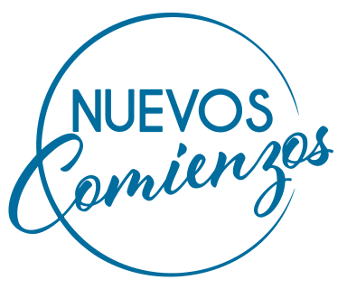

Para abrir la Biblia
Pasajes clave utilizados
-
Éxodo 31:1-5
Dios escogió y capacitó a Bezalel con sabiduría, inteligencia y capacidad creativa para participar en la construcción del tabernáculo.
-
1 Corintios 12:4-7
Hay diversidad de dones, servicios y funciones, pero todos proceden del mismo Dios. A cada creyente le es dada una manifestación del Espíritu para el bien de los demás.
-
1 Corintios 12:8-11
Palabra de sabiduría, conocimiento, fe, sanidades, milagros, profecía, discernimiento, lenguas e interpretación son manifestaciones que el Espíritu distribuye según Su voluntad.
-
1 Pedro 4:10-11
Cada creyente debe poner al servicio de los demás el don que ha recibido, administrando fielmente la gracia de Dios.
-
1 Corintios 12:12
Aunque el cuerpo tiene muchos miembros, todos forman un solo cuerpo en Cristo.
-
1 Samuel 17
Doris utilizó la historia de David y Goliat para mostrar la importancia de servir desde el diseño que Dios nos dio, en lugar de intentar usar «la armadura» de otra persona.
Estos textos sostienen el hilo principal del mensaje: Dios no solo nos ha dado recursos, sino que espera que los administremos y los pongamos al servicio de Su propósito.
Lo esencial en una frase
Idea central del mensaje
La mejor inversión que podemos hacer con nuestra vida es poner al servicio de Dios todo lo que Él mismo depositó en nosotros: nuestros dones, talentos, habilidades, tiempo y diseño particular, para Su gloria y para el bien de los demás.
No somos dueños absolutos de lo que tenemos; somos administradores. Dios nos capacitó de maneras diferentes y, por tanto, nuestra responsabilidad no es compararnos ni construir nuestro propio reino, sino descubrir lo recibido, desarrollarlo y entregárselo nuevamente a Él.
Y todo esto nace de una verdad aún mayor: la inversión más grande no la hacemos nosotros. Dios ya la hizo al entregar a Jesucristo por nosotros. Nuestra entrega es una respuesta de fidelidad y gratitud a Su gracia.
Quince ideas para meditar
Puntos principales del mensaje
-
Todos hemos recibido algo de parte de Dios
Doris inició con una experiencia familiar sencilla: al compartir juntos la Palabra, cada miembro de su familia recibe algo diferente de Dios y, cuando lo comparte, todos terminan siendo bendecidos.
De ahí surge una pregunta fundamental:
«¿Qué estás haciendo con lo que Dios depositó en ti?»
Nadie debe asumir que no tiene nada que aportar. Dios ha puesto recursos, capacidades y manifestaciones de Su gracia en cada uno, y lo que Él entrega no fue diseñado únicamente para beneficio personal.
-
Dones, talentos y habilidades no son exactamente lo mismo
Doris hizo una distinción importante:
- Las habilidades son capacidades que podemos aprender, desarrollar y perfeccionar con el tiempo. Podemos incluso desarrollar una habilidad que inicialmente no disfrutamos o dominamos.
- Los talentos son capacidades o disposiciones que parecen surgir de manera más natural, aunque también necesitan formación y desarrollo.
- Los dones son manifestaciones de la gracia de Dios dadas por medio del Espíritu Santo para edificar a la iglesia y glorificar a Dios.
Esto significa que Dios puede obrar tanto a través de aquello que parece extraordinario como de acciones aparentemente sencillas: escuchar, abrazar, aconsejar, servir o acompañar a alguien.
-
Dios no solamente llama: también capacita
Éxodo 31 muestra a Dios capacitando específicamente a Bezalel para participar en la construcción del tabernáculo. Dios le dio sabiduría, inteligencia y creatividad para realizar una tarea concreta.
De la misma manera, Dios ha colocado capacidades particulares en nosotros que corresponden con aquello que desea hacer a través de nuestra vida.
1 Corintios 12 refuerza esta verdad: es el Espíritu quien distribuye los dones «según lo que Él determina».
Por tanto, nuestro diseño no es accidental. Dios sabe qué depositó en cada persona y para qué lo hizo.
-
Lo pequeño en nuestras manos puede multiplicarse en las manos de Dios
Doris contó cómo identificó su habilidad para diseñar y vio una necesidad: crear una agenda que ayudara a las personas a planificarse manteniéndose centradas en Dios.
Comenzó pensando en apenas unas 25 agendas. Durante la primera semana se vendieron más de 100 y, con los años, el proyecto superó las 5,000 unidades y llegó a su octava edición.
La enseñanza no estuvo en la cantidad de agendas, sino en lo que Dios puede hacer cuando ponemos a Su disposición aquello que ya depositó en nosotros.
Nuestros límites no determinan los límites del propósito de Dios.
«Su gracia nos capacita mucho más allá de nuestras limitaciones.»
Dios puede multiplicar aquello que consideramos demasiado pequeño cuando lo colocamos en Sus manos.
-
Nuestra vida siempre está siendo invertida en algo
Normalmente relacionamos la palabra inversión con dinero, pero Doris amplió el concepto: invertimos nuestra vida en aquello a lo que entregamos nuestro tiempo, atención, dones, talentos y habilidades.
Y toda inversión produce algún tipo de resultado.
Podemos estar invirtiéndonos en el lugar equivocado, obteniendo resultados pasajeros. Pero también podemos estar en el lugar correcto y hacerlo con la motivación equivocada, buscando reconocimiento, riqueza, vanidad o aprobación personal.
Por eso no basta preguntarnos qué estamos haciendo. También debemos preguntarnos:
- ¿Para quién lo estoy haciendo?
- ¿Qué está produciendo?
- ¿A quién está glorificando?
-
La primera característica de una buena inversión es que apunta a Cristo
Doris resumió el primer criterio con una instrucción directa:
«Apunta a Cristo.»
Todo lo que hacemos debe hablar de Dios: Su amor, Su gracia, Su misericordia y Su carácter.
Esto aplica tanto al servicio dentro de la iglesia como a la vida cotidiana: un trabajo, una reunión, un correo, la administración del hogar o la manera en que tratamos a otras personas.
La meta no es simplemente ser excelentes o productivos. La meta es glorificar a Dios y edificar a otros.
Por eso, el fundamento de nuestros dones, talentos y habilidades debe ser el amor.
-
No fuimos diseñados para compararnos, sino para complementarnos
Uno de los énfasis más fuertes del mensaje fue el peligro de la comparación.
Dios puede utilizar a una persona para crear comunidad y a otra para enseñar Su Palabra. Una función no disminuye el valor de la otra.
Cuando miramos constantemente lo que otro tiene, podemos terminar descuidando precisamente aquello que Dios nos encargó.
«Compararte es la ruta perfecta para desviarte del propósito de Dios.»
El problema de la comparación no es solamente emocional. Puede convertirse en un problema de obediencia: mientras intentamos parecernos a otro, dejamos sin atender nuestra propia asignación.
El llamado, entonces, no es competir sino complementarnos. Lo que Dios depositó en uno puede unirse a lo que depositó en otro para cumplir una obra mayor.
-
Nuestro don encuentra propósito cuando se pone al servicio de los demás
1 Pedro 4:10-11 fue uno de los textos centrales:
«Cada uno ponga al servicio de los demás el don que haya recibido.»
La buena administración de la gracia de Dios no consiste simplemente en reconocer que tenemos un don. Consiste en ponerlo en movimiento para servir.
El don no fue dado para alimentar nuestro ego, sino para que Dios sea glorificado y otros sean edificados.
-
Abraza tu diseño: no necesitas la armadura de otra persona
A partir de David y Goliat, Doris mostró lo que ocurre cuando intentamos cumplir nuestra asignación usando la identidad de otro.
Saúl le entregó a David su armadura, pero David no podía moverse con ella porque no había sido diseñada para él.
Del mismo modo, intentar imitar la manera en que otro sirve, comunica, lidera o utiliza sus dones puede alejarnos de nuestra propia esencia.
«El diseño con el que Él te hizo es el que va a responder a eso que Él quiere hacer.»
Dios no necesita una copia de otra persona. Quiere utilizar aquello que Él mismo diseñó en ti.
-
Hay cosas que descubrimos solamente cuando nos involucramos
Doris desafió a la iglesia a no permanecer esperando indefinidamente una revelación espectacular acerca de dónde servir.
Podemos descubrir dones mientras aconsejamos, oramos, servimos o respondemos a una necesidad.
La disposición precede muchas veces al descubrimiento.
«A veces el Padre necesita ver la disposición de nosotros para poder entregarte la asignación.»
No todo comienza con absoluta claridad. Algunas cosas comienzan simplemente diciendo: «Sí, quiero ser parte».
-
Somos muchos miembros, pero un solo cuerpo
1 Corintios 12:12 sirvió para llevar el mensaje de lo individual a lo colectivo.
Cada creyente tiene un diseño particular, pero ninguno fue diseñado para funcionar aisladamente.
Doris utilizó la imagen del cuerpo humano: cuando un órgano no cumple correctamente su función, otros terminan sobrecargándose.
La iglesia necesita que sus miembros caminen alineados bajo una misma cabeza: Cristo.
Cada miembro importa. Cada función aporta. Cada diseño tiene un lugar.
-
Dios es la fuente: nosotros somos recipientes
Doris utilizó varias tazas diferentes para ilustrar una de las verdades más hermosas del mensaje.
Cada taza tenía un diseño diferente y podía utilizarse para un propósito distinto. De la misma manera, Dios nos diseñó de maneras diferentes y puede utilizarnos en momentos y necesidades particulares.
Pero había otra enseñanza: las tazas no podían producir por sí mismas el agua que contenían. Alguien tenía que llenarlas.
Así ocurre con nosotros.
«Nosotros no podemos producir nada por nosotros mismos. Necesitamos a Dios. Él es quien nos llena, quien nos da vida.»
Nuestro diseño importa, pero nuestra fuente importa todavía más. Sin Dios podemos tener capacidad, pero no podemos producir por nosotros mismos aquello que solo Su gracia puede generar.
-
No basta con estar cerca del propósito: hay que participar de él
Doris representó diferentes posiciones espirituales.
Hay personas que ya se están invirtiendo plenamente en Dios y necesitan perseverar.
Otras conocen que Dios les ha dado algo y permanecen cerca de Su obra, pero no terminan de involucrarse porque saben que servir tiene un costo.
La frase fue particularmente confrontadora:
«Están donde las cosas ocurren, pero no son parte de que las cosas ocurran.»
Estar cerca de la obra no equivale a participar de ella.
La invitación es a dar el paso, aunque sea poco a poco, porque el mismo Dios que demanda nuestra entrega es quien vuelve a llenarnos.
-
El miedo y la inseguridad no deben determinar cuánto entregamos
Otras personas saben que han recibido de Dios, pero se consideran pequeñas cuando se comparan con los demás.
Doris recordó que cada recipiente está lleno a su medida. Nuestro diseño responde a una parte específica del propósito de Dios.
Por eso, el llamado fue:
«Deja de mirar a los lados y comprende que tú tienes todo lo necesario.»
No significa que seamos autosuficientes, sino que podemos confiar en que Dios sabía lo que hacía cuando nos diseñó y nos llamó.
-
Para quien todavía está lejos, la primera inversión es venir a Cristo
El mensaje también alcanzó a quienes conocen acerca de Dios, pero todavía no se han rendido a Él.
Doris reconoció las preguntas y temores que pueden surgir ante la idea de entregar la vida a Cristo, pero recordó que ese vacío profundo solamente puede ser llenado por Dios.
«Ese vacío tiene nombre y es el nombre de Dios.»
La invitación no fue a llegar con todas las respuestas resueltas, sino a acercarse a Dios incluso con dudas y preguntas, confiando en Su gracia, amor y misericordia.
Para vivirlo esta semana
Aplicación práctica para la vida diaria
Doris presentó acciones muy concretas para comenzar a administrar mejor lo que Dios nos ha dado.
-
Acércate a Dios y rinde tu corazón
Antes de descubrir qué hacer, vuelve a la fuente. Preséntate delante de Dios diciendo: «Heme aquí, Señor».
-
Medita en aquello para lo que eres bueno
Examina tus habilidades, talentos y las maneras en que Dios suele utilizarte. Pregunta también a creyentes maduros qué reconocen en ti.
-
Abraza desde tu esencia lo que Dios te ha dado
No intentes servir utilizando la «armadura» de otra persona. Tu diseño también tiene propósito.
-
Involúcrate en la obra
No esperes conocer cada detalle antes de comenzar. Sirve, ora, ayuda, aprende, participa y permite que Dios revele capacidades mientras caminas.
-
Camina como parte de un mismo cuerpo
No compitas con otros creyentes. Complementa, coopera y reconoce que la obra necesita diferentes miembros trabajando bajo la dirección de Cristo.
Una pregunta personal que atraviesa todo el mensaje
¿En qué estoy invirtiendo mi vida?
No solamente dónde estoy gastando dinero, sino dónde están yendo mis días, mis fuerzas, mi creatividad, mis capacidades, mis oportunidades y aquello que Dios depositó en mí.
La invitación de Doris es a pasar de ser espectadores del propósito de Dios a colaboradores activos de Su obra.
Para guardar y compartir
Frases clave o citas impactantes
«¿Qué estás haciendo con lo que Dios depositó en ti?»
«Su gracia nos capacita mucho más allá de nuestras limitaciones.»
«Compararte es la ruta perfecta para desviarte del propósito de Dios.»
«El diseño con el que Él te hizo es el que va a responder a eso que Él quiere hacer.»
«A veces el Padre necesita ver la disposición de nosotros para poder entregarte la asignación.»
«Nuestro diseño responde a una necesidad en el plan del Señor.»
«Ellas están donde las cosas ocurren, pero no son parte de que las cosas ocurran.»
«Deja de mirar a los lados y comprende que tú tienes todo lo necesario.»
«Podemos usar nuestros dones, talentos y habilidades para construir nuestro propio reino o podemos usarlo para el servicio del reino de los cielos. ¿En qué te vas a invertir?»
«La más grande inversión ya Él la hizo cuando envió a Su único Hijo a morir por nosotros en la cruz.»
Para terminar
Cierre
La mejor inversión no consiste en lograr más, destacar más o acumular más. Es tomar todo lo que hemos recibido de Dios y devolvérselo en obediencia, servicio y gratitud.
Nuestros dones, talentos y habilidades no fueron dados para construir una plataforma personal, sino para apuntar a Cristo, edificar Su iglesia y servir a los demás. No necesitamos tener el diseño de otro, ni esperar sentirnos completamente preparados. Necesitamos acercarnos a la fuente, reconocer lo que Él puso en nosotros y disponernos.
Porque al final, nuestra entrega nunca podrá superar la Suya. Antes de pedirnos nuestra vida, Dios ya entregó a Su Hijo. Por eso nuestra respuesta es vivir para Su gloria: no para pagarle, sino porque hemos comprendido Su gracia.

La pregunta que queda es sencilla, pero profundamente confrontadora
¿En qué estás invirtiendo lo que Dios depositó en ti?